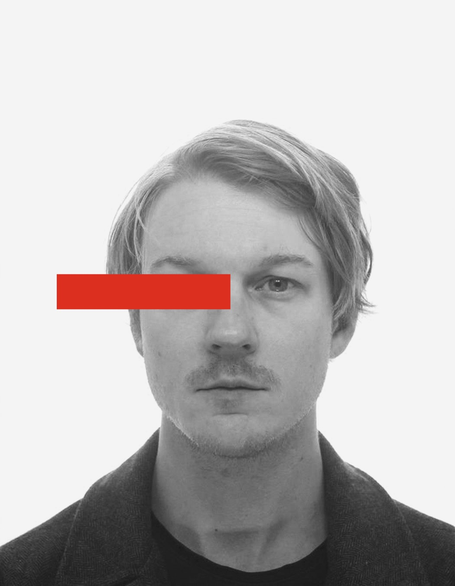

Dominik Freunberger
Researcher
PhD in Linguistics
Centre for Cognitive Neuroscience
University of Salzburg, Austria
2011 - 2017
MSc (hons) in Psycholinguistics
University of Salzburg, Austria
2009 - 2011
PhD in Linguistics
University of Salzburg, Austria
2006 - 2009
Postdoctoral Researcher
Centre for Research on Bilingualism
Stockholm University, Sweden
Since 09/2018
Researcher
BIFIE, Austria
Team Language Assessment
01/2017 - 08/2018
Lecturer (part time)
Department of Linguistics
University of Salzburg, Austria
03/2016 - 03/2017
Doctoral Research Assistant
Centre for Cognitive Neuroscience
University of Salzburg, Austria
09/2011 - 08/2015
Visiting Postgraduate Researcher
University of Edinburgh, UK
03/2015 - 05/2015
04/2014 - 06/2014
Journal Publications
Freunberger, D., Bylund, E., & Abrahamsson, N. (submitted). Is it time to reconsider the ‘gold standard’ paradigm in ERP studies on grammatical processing in a second language? A critical assessment based on qualitative individual differences. Review article submitted to Applied Linguistics.
Freunberger, D., & Roehm, D. (2017). The costs of being certain: Brain potential evidence for linguistic pre-activation in sentence processing. Psychophysiology, 54, 824–832.
Freunberger, D., & Nieuwland, M. S. (2016). Incremental comprehension of spoken quantifier sentences: Evidence from brain potentials. Brain Research, 1646, 475–481.
Freunberger, D., & Roehm, D. (2016). Semantic prediction in language comprehension: Evidence from brain potentials. Language, Cognition and Neuroscience, 31, 1193–1205.
Kulakova, E., Freunberger, D., & Roehm, D. (2014). Marking the Counterfactual: ERP evidence for pragmatic processing of German subjunctives. Frontiers in Human Neuroscience, 8: 548.
Book Contributions
Freunberger, D. & Breit, S. (2019). Lexikalische Kompetenzen von Kindern der Grundstufe I (Lexical competence in first and second grade primary school students). In: Andrea Holzinger, Silvia Kopp-Sixt, Silke Luttenberger, David Wohlhart (Hrsg.): Fokus Grundschule Band 1: Forschungsperspektiven und Entwicklungslinien. Muenster: Waxmann.
Freunberger, D. (2016). Wie Wörter Wellen werden. Die Untersuchung von Sprachverarbeitung mittels EEG. (How words become waves: The investigation of language with EEG). In: Jahresband des IDS 2016. Berlin/Boston: de Gruyter.
Manuals, Tutorials, Technical Reports
Grammel, E. & Freunberger, D. (2018). Handbuch USB PluS – Anregungen zur sprachlichen Bildung und Förderung. BIFIE (Hrsg.): Salzburg.
Freunberger, D. (2018). Referenzprofile des Instruments USB PluS. BIFIE (Ed.): Salzburg.
Freunberger, D. (2017). USB-PluS-Vorkurs: Linguistische Grundlagen. BIFIE (Ed.): Salzburg.
Freunberger, D. & Mösenbichler, C., unter Mitarbeit von Grammel, E. (2017). Benutzerhandbuch USB-PluS- Tool für Schulleiter/innen. BIFIE (Ed.): Salzburg.
Freunberger, D. & Mösenbichler, C., unter Mitarbeit von Grammel, E. (2017). Benutzerhandbuch USB-PluS- Tool. BIFIE (Ed.): Salzburg.
Grammel, E. & Freunberger, D. (auf Basis von Grammel, E. & Zauner, M.) unter Mitarbeit von Mösenbichler C. (2017). Handbuch USB PluS. BIFIE (Ed.): Salzburg.
Freunberger, D. & Breit, S. (2018). Parallelen und Unterschiede im Erwerb grammatischen und lexikalischen Wissens bei L1- und L2-Lernerinnen und Lernern in der Grundstufe I. Talk will be presented at the “Grazer Grundschulkongress”, Graz, Austria, July, 2nd – July 4th.
Freunberger, D. & Roehm, D. (2016). Neurolinguistische Befunde der Sprachverarbeitung – Konsequenzen für das Sprachenlernen. Workshop presented at the “FOFO 2016 - Was weiß die Linguistik über Sprachenlernen - was braucht die Schule? Forschungsbasierte Tagung für Sprachlehrpersonen in Österreich", University of Salzburg, Salzburg, Austria, October 14th.
Freunberger, D. & Roehm, D. (2015). Does a Prediction Benefit Outlast Grammatical Violations? A Double-Violation ERP Study. Poster presented at the “22nd Annual Meeting of the Cognitive Neuroscience Society (CNS)”. San Francisco, United States, March 28th – March 31st.
Freunberger, D. & Roehm, D. (2015). Revealing the Semantic Nature of Prediction in Language Comprehension. Poster presented at the “28th Annual CUNY Conference on Human Sentence Processing”. University of Southern California, Los Angeles, United States, March 19th – March 21st.
Freunberger, D. & Roehm, D. (2014). No Squirrel Likes Collecting Nuts. An ERP Study on Quantification, Prediction, and Cloze Probability. Poster presented at the “20th AMLaP (Architectures and Mechanisms for Language Processing) Conference”. Edinburgh, Scotland, United Kingdom, September 3rd – September 6th.
Freunberger, D. (2014). Does a Prediction Benefit Outlast Grammatical Violations? A Double-Violation ERP Study. Poster presented at the “20th AMLaP (Architectures and Mechanisms for Language Processing) Conference”. Edinburgh, Scotland, United Kingdom, September 3rd – September 6th.
Kulakova, E., Freunberger, D., & Roehm, D. (2014). Marking the counterfactual: ERP evidence for pragmatic processing of German subjunctives. Poster presented at the “20th AMLaP (Architectures and Mechanisms for Language Processing) Conference”. Edinburgh, Scotland, United Kingdom, September 3rd – September 6th.
Freunberger, D. & Roehm, D. (2014). No Squirrel Likes Collecting Nuts. An ERP Study on Quantification, Prediction, and Cloze Probability. Poster presented at the “6th annual meeting of the Society for the Neurobiology of Language (SNL), Amsterdam, The Netherlands, August 27th – August 29th.
Freunberger, D. (2014). Does a Prediction Benefit Outlast Grammatical Violations? A Double-Violation ERP Study. Poster presented at the “6th annual meeting of the Society for the Neurobiology of Language (SNL), Amsterdam, The Netherlands, August 27th – August 29th.
Kulakova, E., Freunberger, D., & Roehm, D. (2014). Marking the counterfactual: ERP evidence for pragmatic processing of German subjunctives. Poster presented at the “6th annual meeting of the Society for the Neurobiology of Language (SNL), Amsterdam, The Netherlands, August 27th – August 29th.
Roehm, D. & Freunberger, D. (2013). The role of prediction in L1/L2 sentence processing. Talk presented at the „44th Poznan Linguistics Meeting: PLM2013“, Poznan, Poland, August 29th – September 1st.
Freunberger, D., Roehm, D., & Haider, H. (2013). Vampires like drinking soap. An ERP study on the influence of negative quantifiers on predictive processes in language comprehension. Talk presented at the “CECIL’S 3: Central European Conference in Linguistics for Postgraduate Students”, Piliscaba, Budapest, Hungary, August 22nd – August 23rd.
Kulakova, E., & Freunberger, D. (2013). Counterfactual and hypothetical sentence processing: an ERP investigation of linguistic mood. Poster presented at the “21st Annual Meeting of the European Society for Philosophy and Psychology: ESPP2013”, Department of Philosophy I, Faculty of Psychology, University of Grenada, Grenada, Spain, July 9th – July 12th.
Freunberger, D., Roehm, D., & Haider, H. (2013). Rien Ne Va Plus. Sentence Closure ERP-Effects in Online Processing. Poster presented at the “11th International Symposium of Psycholinguistics”, Tenerife, Canary Islands, Spain, March 20th – March 23rd.
Freunberger, D., & Roehm, D. (2012). Predicting the predictable: The effect of proficiency on lexical- semantic processing strategies in adult L2 learners. Talk presented at the “Psycholinguistics in Flanders 2012”, Berg en Dal, Nijmegen, The Netherlands, June 6th – June 7th.
Freunberger, D., Haider, H., & Roehm, D. (2012). Predicting the predictable: The effect of proficiency on lexical-semantic processing strategies in adult L2 learners. Talk presented at the “10. Tagung der Österreichischen Gesellschaft für Psychologie“ (10th conference of the Austrian Society for Psychology), Karl-Franzens University, Graz, Austria, April 12th – April 14th.
Roehm, D. & Freunberger, D. (2012). Predicting the predictable: The effect of proficiency on lexical- semantic processing strategies in adult L2 learners. Poster presented at the „25th Annual CUNY Conference on Human Sentence Processing“, New York, New York, March 14th – March 16th.